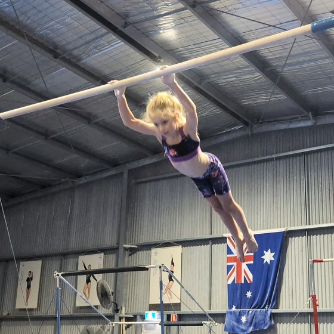
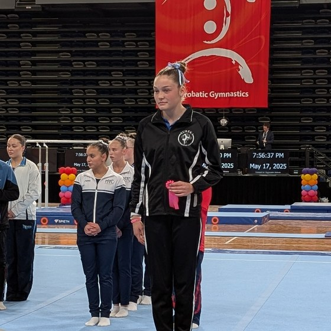

Many of the clubs in this series so far have been metro clubs. Waverley, BTYC, MYC, PIT, MAGA, EKGA, Knox, Athleta. Geelong YMCA is the one exception, genuinely regional in its own right, though still an easy run down the freeway. Eureka Gymnastics Club is a different level of regional again, out in Ballarat, well over an hour's drive from where most of Victoria's gymnastics competitions are held.
Last time, I profiled Athleta Gymnastics, a club less than a decade old. Eureka has been around since 2007, though not continuously, and the story of how it got from there to here is worth telling properly.
Closed, reopened, and moved twice
Eureka Gymnastics Club was founded in 2007 to give Ballarat kids a genuine competitive gymnastics option, sharing a venue for its first two years. Per the club's own history, it ceased operating at the start of 2010, intending to become a fully independent club, and reopened in 2013 as exactly that, a fully independent club with its own qualified coaching staff. That's a meaningful distinction: this wasn't a club that failed and started again from nothing, it was a deliberate step toward independence.
The club then outgrew its space. In March 2015, it moved into a new, purpose-built facility on Mentay Way, about five minutes from where it had been, roughly 1,200 square metres of floor space, built specifically to support both WAG and MAG competition. From what I found researching this piece, the move itself was a genuinely community-driven effort, with the club calling on parents and locals to pitch in with labour and material donations to get the new space ready. It says as much about the Ballarat community as it does about the club itself. Earlier this year, Eureka moved again, this time to its current home on Grandlee Drive, Wendouree. Two relocations in eleven years, each one into a bigger space than the last, isn't a bad way to track a club's growth.
Hosting its own regional circuit

Being regional cuts both ways. The competition circuit clusters heavily around Melbourne, which means a lot of early starts and long drives home for Ballarat families, and it's a smaller pool of local clubs to pull qualified coaches from than a metro suburb has on its doorstep. But it also means Eureka gets to be the biggest fish in a competition pond of its own, and this year that's exactly what's happening.
Eureka hosted the Eureka Invitational back in August 2024. Gymnastics Victoria doesn't always publish every regional competition's results as quickly as the metro ones, so a gap in our database between then and now isn't evidence the event stopped, and sure enough, per the club's own Facebook page, the Eureka Invitational is back this year, at the club's new Grandlee Drive venue, in a few weeks' time. The invite list reads like a roll call of western Victoria's regional gymnastics scene: Stawell Gymnastics Club, Natimuk & District Gymnastic Club, Portland Gymnastics Club, Ballarat Gymsports, Blue Lake Gymnastics Club, and Warrnambool Gymnastics Centre are all making the trip. That's a genuine regional circuit, and Eureka is anchoring it.
What the numbers say: WAG
Forty-three WAG athletes appear in my database for Eureka, with 205 results across 26 competitions spanning the 2024, 2025, and 2026 seasons. At Level 8 and above, the club has accumulated 21 medals: 8 gold, 8 silver, and 5 bronze. Bars is the club's strongest apparatus relative to the field, with floor the one area that looks like the clearest room for growth.

Layla Muir has reached Level 10, the highest level any Eureka athlete has competed at in my data, and 2026 has been her best season yet. She won the BTYC MAG and WAG Senior Extravaganza in March with 44.55, was 2nd at the Knox Senior WAG Invitational, and capped it off with 2nd place in Division 2 at this year's Senior Victorian Championships with 44.466, her best result yet at the highest level she's reached. She first appears in my database in 2024, competing at Level 9, where she won her first two events for the club and picked up a 3rd at that year's Senior Victorian Championships.
Myah Johnston is the clearest progression story in the club. She competed at Level 7 in 2024, winning her own club's Eureka Invitational that August, moved up to Level 8 in 2025, and stepped up again to Level 9 in 2026. In May, she won the Level 9 Division 2 title outright at the Senior Victorian Championships with 44.900, the clearest podium and title story to come out of this club in the years I have on record.
Eloise Murphy had arguably the biggest year of all. As I covered in detail when the 2026 Victorian State Team was announced, she was 12th at Trial 1 with a modest 40.782, then climbed to 11th at Senior Vics with 45.849, a 5-point improvement that was enough to see her named a Level 9 Open Reserve for the State Team and selected to the Level 9 Border Challenge White squad. That wasn't a one-off. Earlier in the season she'd already won both the Knox Senior WAG Invitational and the BTYC MAG and WAG Senior Extravaganza at Level 9, so the Senior Vics form was a continuation, not a surprise.